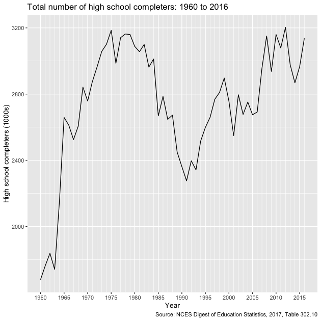
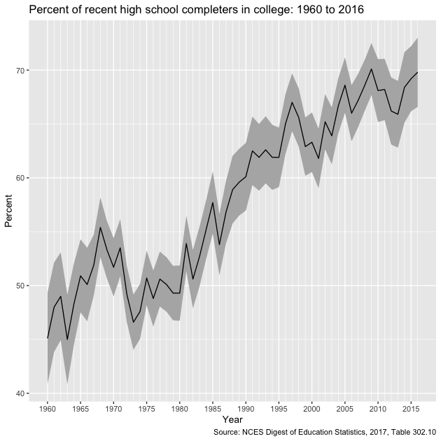
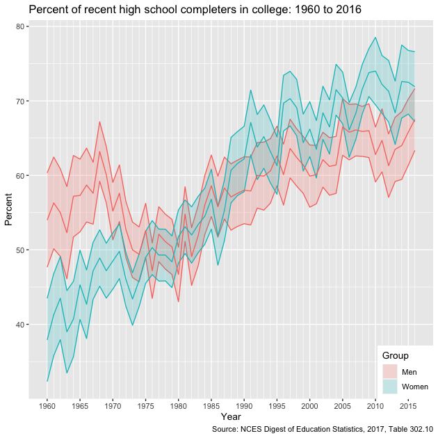

A course in quantitative research workflow for students in the higher education administration program at the University of Florida
This lesson introduces the basic steps to scrape data from a website using the rvest. Because there are about as many ways to scrape a website as there are types of web data that you want to gather, web scraping is both art and science, with varying degrees of data cleaning required. If you are lucky, data will be regularly and unambiguously formatted, meaning that it is easy to grab the data you want in the format that you want. If you are less lucky, regular expressions to clean strings will quickly become your friend.
Knowing a bit about web design, specifically HTML, XML, and CSS is helpful when web scraping. This lesson focuses on static sites, but sites that require user interaction (e.g., clicking a button or inputting data into a form in order to show data) can also be scraped. These sites require special packages such as RSelenium and some knowledge of Javascript is helpful.
For this lesson, however, we’ll read static web tables from NCES Digest of Education Statistics. NCES helpfully makes these tables available in downloadable Excel worksheets, but we’ll pretend they don’t exist for the moment. Specifically, we’ll focus on Table 302.10, which shows numbers of high school graduates and percentage of college enrollment, broken out by gender and college level, for the years 1960 through 2016.
## ---------------------------
## libraries
## ---------------------------
library(tidyverse)
## ── Attaching packages ─────────────────────────────────────── tidyverse 1.3.1 ──
## ✔ ggplot2 3.3.5 ✔ purrr 0.3.4
## ✔ tibble 3.1.6 ✔ dplyr 1.0.8
## ✔ tidyr 1.2.0 ✔ stringr 1.4.0
## ✔ readr 2.1.2 ✔ forcats 0.5.1
## ── Conflicts ────────────────────────────────────────── tidyverse_conflicts() ──
## ✖ dplyr::filter() masks stats::filter()
## ✖ dplyr::lag() masks stats::lag()
library(rvest)
##
## Attaching package: 'rvest'
## The following object is masked from 'package:readr':
##
## guess_encoding
library(lubridate)
##
## Attaching package: 'lubridate'
## The following objects are masked from 'package:base':
##
## date, intersect, setdiff, union
First, let’s check out the table we want to scrape. The table we see looks like a regularly formatted table, much like we would see in a paper document. But unlike a printed document, a web page relies on hidden-from-the-user code to generate what we see. By doing it this way instead of serving a static image, websites can adjust to the wide array of user screen sizes, devices, and operating systems. Instructions that tell the user device how to generate the page are also smaller than sending a preformatted image, so bandwidth and time to load are also reduced.
But as web scrapers, we don’t need this. We need the underlying HTML/CSS/XML code used to generate the page. To see it, you’ll need to use a web site inspector. With Firefox and Chrome, you should be able to right-click the page and see the underlying code (you may need to turn on developer tools first). With Safari, you will have to enable the developer tools first.
The top code of the page should look something like this:
<!DOCTYPE html PUBLIC "-//W3C//DTD XHTML 1.0 Transitional//EN" "http://www.w3.org/TR/xhtml1/DTD/xhtml1-transitional.dtd">
<!-- Current year pub navigation function -->
Moving further down, we find the table data, but in a very different format (first row):
...
<tr>
<th class="TblCls009" scope="row" nowrap="nowrap">1960 </th>
<td class="TblCls010">1,679</td>
<td class="TblCls011">(44.5)</td>
<td class="TblCls010">756</td>
<td class="TblCls011">(32.3)</td>
<td class="TblCls010">923</td>
<td class="TblCls011">(30.1)</td>
<td class="TblCls010">45.1</td>
<td class="TblCls011">(2.16)</td>
<td class="TblCls010">—</td>
<td class="TblCls011">(†)</td>
<td class="TblCls010">—</td>
<td class="TblCls011">(†)</td>
<td class="TblCls010">54.0</td>
<td class="TblCls011">(3.23)</td>
<td class="TblCls010">—</td>
<td class="TblCls011">(†)</td>
<td class="TblCls010">—</td>
<td class="TblCls011">(†)</td>
<td class="TblCls010">37.9</td>
<td class="TblCls011">(2.85)</td>
<td class="TblCls010">—</td>
<td class="TblCls011">(†)</td>
<td class="TblCls010">—</td>
<td class="TblCls011">(†)</td>
</tr>
...
The task is to convert these data into a data frame that we can then store or use in tables and figures. This is what the rvest helps us do.
The first step is to read the web page code into an object using the
read_html() function.
## set site
url <- "https://nces.ed.gov/programs/digest/d17/tables/dt17_302.10.asp"
## get site
site <- read_html(url)
Showing our object, we can see that the basic structure of the web page is stored.
## show
site
## {html_document}
## <html>
## [1] <head>\n<meta http-equiv="Content-Type" content="text/html; charset=UTF-8 ...
## [2] <body bgcolor="#ffffff" text="#000000">\r\n\t\r\n\t<!-- Main NCES Header ...
Right now, we have a structured, but not particularly useful object
holding our web page data. To pull out specific data, we use the
html_nodes() function. Selecting a node is somewhat akin to using
dplyr’s filter() on a data frame.
Great…but what’s a node and how do I know which ones to use? First,
a node is a particular element that is comprised of some information
stored between, for example, HTML tags like <p>...</p> or
<h1>...</h2>. Good web design says that information on page should
be organized by its purpose and similarity to other data. For example,
major headers should be wrapped in <h1> tags and similar page
sections should be given the same CSS class. We can use CSS ids and
classes with the html_nodes() function to pull the exact data we
need.
Great!…but what are the classes that we need? Well, we could just inspect the web page manually and guess. For some pages, that works great. But it certainly looks like a chore for this page. Luckily, there’s a great tool that will help us.
SelectorGadget is a (now very old) plugin that allows you to click on a web page and, through process of elimination, get the exact combination of HTML tags and CSS ids and classes you need to pull only the data you need.
You can get it from the link above or by following the instructions here.
The SelectorGadget page has instructions, but briefly, this is the process:
As you’re clicking, you’ll see a box with a string of element ids and
classes changing. When you’re finished, copy this string. This is your
node you’ll use in the html_nodes() function!
Quick exercise
Get the SelectorGadget plugin and play with it for a few minutes. See if you can select only a specific column then only a specific row.
As a first step, let’s get the first column of data in Table 302.10:
the total number of recent high school graduates. Using
SelectorGadget, I see that the node string I should use is
'.tableBracketRow td:nth-child(2)'. After selecting the node, we use
html_text() to convert the data into a vector like we’re used to
seeing.
## subset to just first column
tot <- site %>%
html_nodes(".tableBracketRow td:nth-child(2)") %>%
html_text()
## show
tot
## [1] "1,679" "1,763" "1,838" "1,741" "2,145" " " "2,659" "2,612" "2,525"
## [10] "2,606" "2,842" " " "2,758" "2,875" "2,964" "3,058" "3,101" " "
## [19] "3,185" "2,986" "3,141" "3,163" "3,160" " " "3,088" "3,056" "3,100"
## [28] "2,963" "3,012" " " "2,668" "2,786" "2,647" "2,673" "2,450" " "
## [37] "2,362" "2,276" "2,397" "2,342" "2,517" " " "2,599" "2,660" "2,769"
## [46] "2,810" "2,897" " " "2,756" "2,549" "2,796" "2,677" "2,752" " "
## [55] "2,675" "2,692" "2,955" "3,151" "2,937" " " "3,160" "3,079" "3,203"
## [64] "2,977" "2,868" " " "2,965" "3,137"
So far so good, but we can see a few problems. First, the blank rows
in the table show up in our data. While those blank table spaces are good
for the eyes, they aren’t good in our data set. Let’s try to remove
them using the trim = TRUE option.
## ...this time trim blank spaces
tot <- site %>%
html_nodes(".tableBracketRow td:nth-child(2)") %>%
html_text(trim = TRUE)
## show
tot
## [1] "1,679" "1,763" "1,838" "1,741" "2,145" "" "2,659" "2,612" "2,525"
## [10] "2,606" "2,842" "" "2,758" "2,875" "2,964" "3,058" "3,101" ""
## [19] "3,185" "2,986" "3,141" "3,163" "3,160" "" "3,088" "3,056" "3,100"
## [28] "2,963" "3,012" "" "2,668" "2,786" "2,647" "2,673" "2,450" ""
## [37] "2,362" "2,276" "2,397" "2,342" "2,517" "" "2,599" "2,660" "2,769"
## [46] "2,810" "2,897" "" "2,756" "2,549" "2,796" "2,677" "2,752" ""
## [55] "2,675" "2,692" "2,955" "3,151" "2,937" "" "3,160" "3,079" "3,203"
## [64] "2,977" "2,868" "" "2,965" "3,137"
Better, but the empty elements are still there. We can use
str_subset() from the stringr library (loaded with tidyverse) to
remove them.
## remove blank values; str_subset removes pattern ("")
tot <- tot %>% str_subset(pattern = "")
## show
tot
## [1] "1,679" "1,763" "1,838" "1,741" "2,145" "2,659" "2,612" "2,525" "2,606"
## [10] "2,842" "2,758" "2,875" "2,964" "3,058" "3,101" "3,185" "2,986" "3,141"
## [19] "3,163" "3,160" "3,088" "3,056" "3,100" "2,963" "3,012" "2,668" "2,786"
## [28] "2,647" "2,673" "2,450" "2,362" "2,276" "2,397" "2,342" "2,517" "2,599"
## [37] "2,660" "2,769" "2,810" "2,897" "2,756" "2,549" "2,796" "2,677" "2,752"
## [46] "2,675" "2,692" "2,955" "3,151" "2,937" "3,160" "3,079" "3,203" "2,977"
## [55] "2,868" "2,965" "3,137"
Getting closer. Next, let’s convert our numbers to actual numbers,
which R thinks are strings at the moment. To do this, we need to get
rid of the commas. The str_replace() function is perfect for this.
Regular expressions can become complicated, but our use
here is simple:
## remove commas, replacing with empty string
tot <- tot %>% str_replace(pattern = ",", replacement = "")
## show
tot
## [1] "1679" "1763" "1838" "1741" "2145" "2659" "2612" "2525" "2606" "2842"
## [11] "2758" "2875" "2964" "3058" "3101" "3185" "2986" "3141" "3163" "3160"
## [21] "3088" "3056" "3100" "2963" "3012" "2668" "2786" "2647" "2673" "2450"
## [31] "2362" "2276" "2397" "2342" "2517" "2599" "2660" "2769" "2810" "2897"
## [41] "2756" "2549" "2796" "2677" "2752" "2675" "2692" "2955" "3151" "2937"
## [51] "3160" "3079" "3203" "2977" "2868" "2965" "3137"
Now we’re ready to convert to a number.
## convert to numeric
tot <- tot %>% as.integer()
## show
tot
## [1] 1679 1763 1838 1741 2145 2659 2612 2525 2606 2842 2758 2875 2964 3058 3101
## [16] 3185 2986 3141 3163 3160 3088 3056 3100 2963 3012 2668 2786 2647 2673 2450
## [31] 2362 2276 2397 2342 2517 2599 2660 2769 2810 2897 2756 2549 2796 2677 2752
## [46] 2675 2692 2955 3151 2937 3160 3079 3203 2977 2868 2965 3137
Finished!
So that these numbers make sense, let’s grab the years column and
create and data frame so that we can make a figure of long term high
school completer totals. Again, the first step is to use
SelectorGadget to get the node string. This time, it’s "tbody th".
## get years column
years <- site %>%
html_nodes("tbody th") %>%
html_text(trim = TRUE)
## remove blank spaces like before
years <- years %>% str_subset(pattern = "")
## show
years
## [1] "1960" "1961" "1962" "1963" "1964" "1965" "1966" "1967" "1968"
## [10] "1969" "1970" "1971" "1972" "1973" "1974" "1975" "1976" "1977"
## [19] "1978" "1979" "1980" "1981" "1982" "1983" "1984" "1985" "1986"
## [28] "1987" "1988" "1989" "1990" "1991" "1992" "1993" "1994" "1995"
## [37] "1996" "1997" "1998" "1999" "2000" "2001" "2002" "2003" "2004"
## [46] "2005" "2006" "2007" "2008" "2009" "20103" "20113" "20123" "20133"
## [55] "20143" "20153" "20163"
We’ve gotten rid of the blank items, but now we have a new problem:
the footnotes in the last few years has just be added to the
year. Instead of 2010, we have 20103, and so on through 2016. Since
the problem is small (it’s easy to see all the bad items) and regular
(always extra 3 as the 5th digit), we can fix it using str_sub().
## trim footnote that's become extra digit
years <- years %>% str_sub(start = 1, end = 4)
## show
years
## [1] "1960" "1961" "1962" "1963" "1964" "1965" "1966" "1967" "1968" "1969"
## [11] "1970" "1971" "1972" "1973" "1974" "1975" "1976" "1977" "1978" "1979"
## [21] "1980" "1981" "1982" "1983" "1984" "1985" "1986" "1987" "1988" "1989"
## [31] "1990" "1991" "1992" "1993" "1994" "1995" "1996" "1997" "1998" "1999"
## [41] "2000" "2001" "2002" "2003" "2004" "2005" "2006" "2007" "2008" "2009"
## [51] "2010" "2011" "2012" "2013" "2014" "2015" "2016"
Fixed! Now we bind together with our high school completers
total. Because we want to make a time period line graph, we’ll also
convert the years to a date format. We’ll use ymd from the lubridate
library. Since we only have years, we’ll include the argument
truncated = 2L, which means that we have an incomplete date (no
month or day).
NB Since we dropped blank elements in each vector separately, it’s important to check that all the data line up properly now that we’ve bound them together. If we wanted to be safer, we could have bound the data first, then dropped the rows with double missing values.
## put in data frame
df <- bind_cols(years = years, total = tot) %>%
mutate(years = ymd(years, truncated = 2L))
## show
df
## # A tibble: 57 × 2
## years total
## <date> <int>
## 1 1960-01-01 1679
## 2 1961-01-01 1763
## 3 1962-01-01 1838
## 4 1963-01-01 1741
## 5 1964-01-01 2145
## 6 1965-01-01 2659
## 7 1966-01-01 2612
## 8 1967-01-01 2525
## 9 1968-01-01 2606
## 10 1969-01-01 2842
## # … with 47 more rows
You can see that the date format adds a month and day (January 1st by default). While these particular dates probably aren’t right, we won’t use them later when graphing so they can stay.
Let’s plot our trends.
## plot
g <- ggplot(df, mapping = aes(x = years, y = total)) +
## line for the main estimate
geom_line() +
## make x-axis look nice
## major breaks: every 5 years, from min year to max year
## minor breaks: every 1 year, from min year to max year
## labels: formate to only show year ("%Y")
scale_x_date(breaks = seq(min(df$years),
max(df$years),
"5 years"),
minor_breaks = seq(min(df$years),
max(df$years),
"1 years"),
date_labels = "%Y") +
## nice labels and titles
labs(x = "Year",
y = "High school completers (1000s)",
title = "Total number of high school completers: 1960 to 2016",
caption = "Source: NCES Digest of Education Statistics, 2017, Table 302.10")
g

Quick exercise
Pull in total percentage of enrollment (column 5), add to data frame, and plot against year.
Now that we’ve pulled two columns, let’s try to grab the entire table. Once again, we’ll use SelectorGadget to get our node string.
## save node
node <- paste0(".TblCls002 , td.TblCls005 , tbody .TblCls008 , ",
".TblCls009 , .TblCls011 , .TblCls010")
## save more dataframe-friendly column names that we
## get from looking at the table online
nms <- c("year","hs_comp_tot", "hs_comp_tot_se",
"hs_comp_m", "hs_comp_m_se",
"hs_comp_f", "hs_comp_f_se",
"enr_pct", "enr_pct_se",
"enr_pct_2", "enr_pct_2_se",
"enr_pct_4", "enr_pct_4_se",
"enr_pct_m", "enr_pct_m_se",
"enr_pct_2_m", "enr_pct_2_m_se",
"enr_pct_4_m", "enr_pct_4_m_se",
"enr_pct_f", "enr_pct_f_se",
"enr_pct_2_f", "enr_pct_2_f_se",
"enr_pct_4_f", "enr_pct_4_f_se")
## whole table
tab <- site %>%
## use nodes
html_nodes(node) %>%
## to text with trim
html_text(trim = TRUE)
## show first few elements
tab[1:30]
## [1] "1960" "1,679" "(44.5)" "756" "(32.3)" "923" "(30.1)" "45.1"
## [9] "(2.16)" "—" "(†)" "—" "(†)" "54.0" "(3.23)" "—"
## [17] "(†)" "—" "(†)" "37.9" "(2.85)" "—" "(†)" "—"
## [25] "(†)" "1961" "1,763" "(46.7)" "790" "(33.7)"
Okay. It looks like we have it, but it’s all in single dimension vector. Since we eventually want a data frame, let’s convert to a matrix.
## convert to matrix
tab <- tab %>%
## we know the size by looking at the table online
matrix(., ncol = 25, byrow = TRUE)
## dimensions
dim(tab)
## [1] 68 25
## show first few columns using base R [<rows>,<cols>] notation
tab[1:10,1:5]
## [,1] [,2] [,3] [,4] [,5]
## [1,] "1960" "1,679" "(44.5)" "756" "(32.3)"
## [2,] "1961" "1,763" "(46.7)" "790" "(33.7)"
## [3,] "1962" "1,838" "(44.3)" "872" "(32.0)"
## [4,] "1963" "1,741" "(44.9)" "794" "(32.6)"
## [5,] "1964" "2,145" "(43.6)" "997" "(32.3)"
## [6,] "" "" "" "" ""
## [7,] "1965" "2,659" "(48.5)" "1,254" "(35.7)"
## [8,] "1966" "2,612" "(45.7)" "1,207" "(34.4)"
## [9,] "1967" "2,525" "(38.5)" "1,142" "(28.9)"
## [10,] "1968" "2,606" "(38.0)" "1,184" "(28.7)"
Quick exercise
What happens if you don’t use
byrow = TRUEin the matrix command?
It’s getting better, but now we have a lot of special characters that we need to clean out. This section relies more heavily on regular expressions, but the idea is the same as above.
## clean up table
tab <- tab %>%
## convert to tibble, leaving name repair as minimal for now
as_tibble(.name_repair = "minimal") %>%
## rename using names above
set_names(nms) %>%
## remove commas
mutate(across(everything(), ~ str_replace(., ",", ""))) %>%
## remove dagger and parentheses
mutate(across(everything(), ~ str_replace_na(., "\\(\U2020\\)"))) %>%
## remove hyphens
mutate(across(everything(), ~ str_replace_na(., "\U2014"))) %>%
## remove parentheses, but keep any content that was inside
mutate(across(everything(), ~ str_replace(., "\\((.*)\\)", "\\1"))) %>%
## remove blank strings (^ = start, $ = end, so ^$ = start to end w/ nothing)
mutate(across(everything(), ~ str_replace_na(., "^$"))) %>%
## fix years like above
mutate(year = str_sub(year, 1, 4)) %>%
## convert to numbers, suppressing warnings about NAs b/c we know
mutate(across(everything(), ~ suppressWarnings(as.numeric(.)))) %>%
## drop rows with missing year (blank online)
drop_na(year)
## show
tab
## # A tibble: 57 × 25
## year hs_comp_tot hs_comp_tot_se hs_comp_m hs_comp_m_se hs_comp_f
## <dbl> <dbl> <dbl> <dbl> <dbl> <dbl>
## 1 1960 1679 44.5 756 32.3 923
## 2 1961 1763 46.7 790 33.7 973
## 3 1962 1838 44.3 872 32 966
## 4 1963 1741 44.9 794 32.6 947
## 5 1964 2145 43.6 997 32.3 1148
## 6 1965 2659 48.5 1254 35.7 1405
## 7 1966 2612 45.7 1207 34.4 1405
## 8 1967 2525 38.5 1142 28.9 1383
## 9 1968 2606 38 1184 28.7 1422
## 10 1969 2842 36.6 1352 27.3 1490
## # … with 47 more rows, and 19 more variables: hs_comp_f_se <dbl>,
## # enr_pct <dbl>, enr_pct_se <dbl>, enr_pct_2 <dbl>, enr_pct_2_se <dbl>,
## # enr_pct_4 <dbl>, enr_pct_4_se <dbl>, enr_pct_m <dbl>, enr_pct_m_se <dbl>,
## # enr_pct_2_m <dbl>, enr_pct_2_m_se <dbl>, enr_pct_4_m <dbl>,
## # enr_pct_4_m_se <dbl>, enr_pct_f <dbl>, enr_pct_f_se <dbl>,
## # enr_pct_2_f <dbl>, enr_pct_2_f_se <dbl>, enr_pct_4_f <dbl>,
## # enr_pct_4_f_se <dbl>
Got it!
We could stop where we are, but to make the data more usable in the future, let’s convert to a long data frame. This takes a couple of steps, but the idea is to have each row represent a year by estimate, with a column for the estimate value and a column for the standard error on that estimate. It may help to run the code below one line at a time, checking the progress at each step.
## gather for long data
df <- tab %>%
## pivot_longer estimates, leaving standard errors wide for the moment
pivot_longer(cols = -c(year, ends_with("se")),
names_to = "group",
values_to = "estimate") %>%
## pivot_longer standard errors
pivot_longer(cols = -c(year, group, estimate),
names_to = "group_se",
values_to = "se") %>%
## drop "_se" from standard error estimates
mutate(group_se = str_replace(group_se, "_se", "")) %>%
## filter where group == group_se
filter(group == group_se) %>%
## drop extra column
select(-group_se) %>%
## arrange
arrange(year) %>%
## drop if missing year after reshaping
drop_na(year)
## show
df
## # A tibble: 684 × 4
## year group estimate se
## <dbl> <chr> <dbl> <dbl>
## 1 1960 hs_comp_tot 1679 44.5
## 2 1960 hs_comp_m 756 32.3
## 3 1960 hs_comp_f 923 30.1
## 4 1960 enr_pct 45.1 2.16
## 5 1960 enr_pct_2 NA NA
## 6 1960 enr_pct_4 NA NA
## 7 1960 enr_pct_m 54 3.23
## 8 1960 enr_pct_2_m NA NA
## 9 1960 enr_pct_4_m NA NA
## 10 1960 enr_pct_f 37.9 2.85
## # … with 674 more rows
Let’s look at overall college enrollment percentages for recent graduates over time. Because our data are nicely formatted, it’s easy to subset the full table to data to only those estimates we need as well as generate 95% confidence intervals.
## adjust data for specific plot
plot_df <- df %>%
filter(group %in% c("enr_pct", "enr_pct_m", "enr_pct_f")) %>%
mutate(hi = estimate + se * qnorm(.975),
lo = estimate - se * qnorm(.975),
year = ymd(as.character(year), truncated = 2L),
group = ifelse(group == "enr_pct_f", "Women",
ifelse(group == "enr_pct_m", "Men", "All")))
## show
plot_df
## # A tibble: 171 × 6
## year group estimate se hi lo
## <date> <chr> <dbl> <dbl> <dbl> <dbl>
## 1 1960-01-01 All 45.1 2.16 49.3 40.9
## 2 1960-01-01 Men 54 3.23 60.3 47.7
## 3 1960-01-01 Women 37.9 2.85 43.5 32.3
## 4 1961-01-01 All 48 2.12 52.2 43.8
## 5 1961-01-01 Men 56.3 3.14 62.5 50.1
## 6 1961-01-01 Women 41.3 2.81 46.8 35.8
## 7 1962-01-01 All 49 2.08 53.1 44.9
## 8 1962-01-01 Men 55 3 60.9 49.1
## 9 1962-01-01 Women 43.5 2.84 49.1 37.9
## 10 1963-01-01 All 45 2.12 49.2 40.8
## # … with 161 more rows
First, let’s plot the overall average. Notice that we use the
filter() function in the ggplot() function to remove the subgroup
estimates for men and women.
## plot overall average
g <- ggplot(plot_df %>% filter(group == "All"),
mapping = aes(x = year, y = estimate)) +
## create shaded ribbon for 95% CI
geom_ribbon(aes(ymin = lo, ymax = hi), fill = "grey70") +
## line for main estimate
geom_line() +
## make x-axis look nice
## major breaks: every 5 years, from min year to max year
## minor breaks: every 1 year, from min year to max year
## labels: formate to only show year ("%Y")
scale_x_date(breaks = seq(min(plot_df$year),
max(plot_df$year),
"5 years"),
minor_breaks = seq(min(plot_df$year),
max(plot_df$year),
"1 years"),
date_labels = "%Y") +
## good labels and titles
labs(x = "Year",
y = "Percent",
title = "Percent of recent high school completers in college: 1960 to 2016",
caption = "Source: NCES Digest of Education Statistics, 2017, Table 302.10")
## show
g

After a small dip in the early 1970s enrollment trends have steadily risen over time.
Now let’s compare enrollments over time between men and women (dropping the overall average so our plot is clearer).
## plot comparison between men and women
g <- ggplot(plot_df %>% filter(group %in% c("Men","Women")),
## add colour == group to separate between men and women
mapping = aes(x = year, y = estimate, colour = group)) +
## ribbon for 95% CI, but lower alpha so more transparent
geom_ribbon(aes(ymin = lo, ymax = hi, fill = group), alpha = 0.2) +
## primary estimate line
geom_line() +
## neat x-axis breaks as before
scale_x_date(breaks = seq(min(plot_df$year),
max(plot_df$year),
"5 years"),
minor_breaks = seq(min(plot_df$year),
max(plot_df$year),
"1 years"),
date_labels = "%Y") +
## good labels and titles
labs(x = "Year",
y = "Percent",
title = "Percent of recent high school completers in college: 1960 to 2016",
caption = "Source: NCES Digest of Education Statistics, 2017, Table 302.10") +
## set legend title, drop legend for colour since it's redundant with fill
guides(fill = guide_legend(title = "Group"),
colour = "none") +
## position legend so that it sits on plot face, in lower right-hand corner
theme(legend.position = c(1,0), legend.justification = c(1,0))
## show
g

Though a greater proportion of men enrolled in college in the 1960s and early 1970s, women have been increasing their enrollment percentages faster than men since the 1980s and now have comparatively higher rates of college participation.
Find the unemployment rate for 25 to 34 year-olds by degree type for the years 2014 through 2016. Make a long data frame and use it to make a figure of trends over time by educational attainment.
See Table 501.10 of the NCES Digest of Education Statistics, which can can be found here).